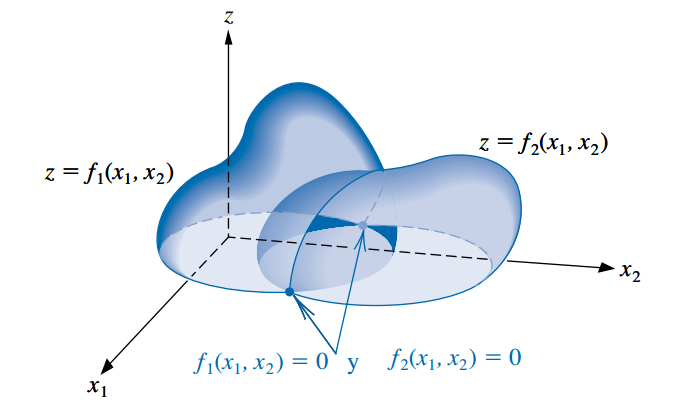
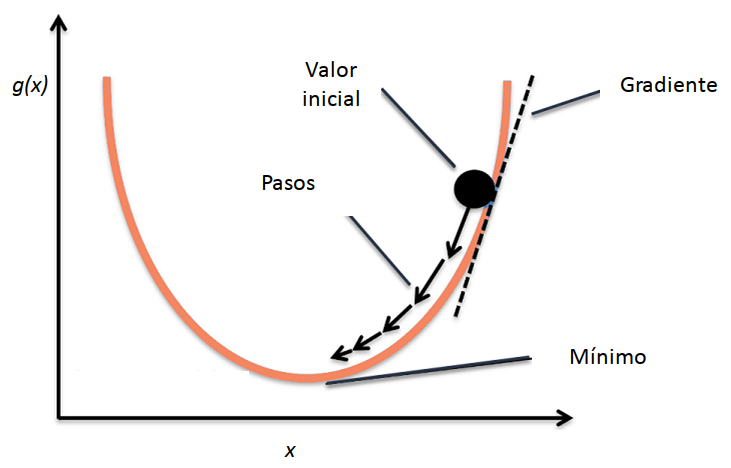
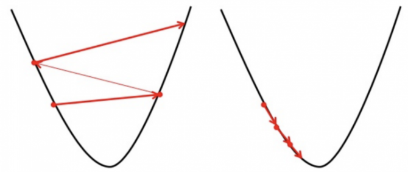

4 Resolución de sistemas de ecuaciones no lineales y optimización
4.1 Introducción
Un sistema de ecuaciones no lineales \(n \times n\) tiene la forma:
\[ \begin{cases} f_1(x_1, x_2, \cdots, x_n) = 0 \\ f_2(x_1, x_2, \cdots, x_n) = 0 \\ \vdots \\ f_n(x_1, x_2, \cdots, x_n) = 0 \end{cases} \]
donde cada función \(f_i\) se puede pensar como un mapeo de un vector \(\mathbf{x} = (x_1, x_2, \cdots, x_n)^T\) del espacio \(n\)-dimensional \(\mathbb{R}^n\) en la recta real \(\mathbb{R}\).
En la siguiente figura se muestra una representación geométrica de un sistema no lineal cuando \(n=2\).
Este sistema de \(n\) ecuaciones no lineales en \(n\) variables también se puede representar al definir una función vectorial \(\mathbf{F}\) de mapeo de \(\mathbb{R}^n\) a \(\mathbb{R}^n\) (es decir, un campo vectorial, así vamos nombrando cosas de Análisis y Álgebra):
\[ \mathbf{F}(x_1, x_2, \cdots, x_n) = \begin{pmatrix} f_1(x_1, x_2, \cdots, x_n) \\ f_2(x_1, x_2, \cdots, x_n) \\ \vdots \\ f_n(x_1, x_2, \cdots, x_n) \end{pmatrix} \]
Si se utiliza notación vectorial con \(\mathbf{x} = (x_1, x_2, \cdots, x_n)^T\) y \(\mathbf{0} = (0, 0, \cdots, 0)^T\), entonces el sistema asume la forma:
\[ \mathbf{F}(\mathbf{x}) = \mathbf{0} \]
Las funciones \(f_1, f_2, \cdots, f_n\) reciben el nombre de funciones coordenadas de \(\mathbf{F}\).
Un acercamiento para la resolución de sistemas de ecuaciones no lineales es pensar si los métodos vistos en la Unidad 2 para resolver ecuaciones no lineales se pueden adaptar y generalizar.
Con eso en mente es posible generalizar, por ejemplo, el método del punto fijo y el método de Newton-Raphson, como veremos en la sección siguiente.
Hay algo muy interesante y es que la búsqueda de la solución de un sistema de ecuaciones no lineales puede ser formulado como un problema de optimización, es decir, un problema en el que se quiere hallar el máximo o el mínimo de función.
Por esta razón, en muchos libros se presenta de manera conjunta el estudio de métodos para resolver sistemas de ecuaciones no lineales y para resolver problemas de optimización, y ellos son el objeto de estudio de esta unidad.
4.2 Sistemas de ecuaciones no lineales
4.2.1 Método de los puntos fijos
- En la Unidad 2 vimos un método para resolver una ecuación del tipo \(f(x)=0\), al transformar primero la ecuación en la forma de punto fijo \(x=g(x)\), tomar un valor inicial \(x_0\) y luego iterar haciendo: \(x_k = g(x_{k-1})\).
- Vamos a ver un proceso similar para las funciones de \(\mathbb{R}^n\) a \(\mathbb{R}^n\).
Definición: una función \(\mathbf{G}\) desde \(D \subset\mathbb{R}^n\) a \(\mathbb{R}^n\) tiene un punto fijo en \(\mathbf{p} \subset D\) si \(\mathbf{G}(\mathbf p) = \mathbf p\).
Para resolver el sistema de \(n\) ecuaciones no lineales \(\mathbf{F}(\mathbf{x}) = \mathbf{0}\):
\[ \begin{cases} f_1(x_1, x_2, \cdots, x_n) = 0 \\ f_2(x_1, x_2, \cdots, x_n) = 0 \\ \vdots \\ f_n(x_1, x_2, \cdots, x_n) = 0 \end{cases} \]
primero debemos reescribir cada ecuación bajo la forma:
\[ \begin{cases} x_1 = g_1(x_1, x_2, \cdots, x_n) \\ x_2 = g_2(x_1, x_2, \cdots, x_n) \\ \vdots \\ x_n = g_n(x_1, x_2, \cdots, x_n) \end{cases} \]
Llamamos con \(\mathbf{G}\) a la función de mapeo \(\mathbb{R}^n\) en \(\mathbb{R}^n\) que reune a todas las funciones \(g_i\):
\[ \mathbf{G}(\mathbf x) = \begin{pmatrix} g_1(x_1, x_2, \cdots, x_n) \\ g_2(x_1, x_2, \cdots, x_n) \\ \vdots\\ g_n(x_1, x_2, \cdots, x_n) \end{pmatrix} \]
Elegimos un vector de valores iniciales \(\mathbf x^{(0)} = (x_1^{(0)}, x_2^{(0)}, \cdots, x_n^{(0)})^T\) y efectuamos el proceso iterativo
\[ \mathbf x^{(k)} = \mathbf{G}(\mathbf x^{(k-1)}) \qquad k \geq 1 \]
Si converge, encontraremos el punto fijo de \(\mathbf{G}\) que no es más que la solución de \(\mathbf{F}(\mathbf{x}) = \mathbf{0}\).
El Teorema 10.6 del libro (página 479) establece cuáles son las condiciones para garantizar la existencia y unicidad del punto fijo, además de asegurar la convergencia del método. Estas condiciones son generalizaciones de las que vimos para el teorema del punto fijo en la Unidad 2.
Sin embargo, no siempre es posible o fácil encontrar una representación de las funciones en una forma que requiere el método y que además cumpla con las condiciones para la convergencia.
Otra opción es adaptar el método de Newton-Raphson, lo cual resulta en una de las técnicas más potentes y ampliamente usadas para resolver sistemas no lineales y de optimización.
4.2.2 Método de Newton (o de Newton-Raphson) para sistemas de ecuaciones
4.2.2.1 Formalización
Recordemos que para resolver una ecuación no lineal del tipo \(f(x) =0\), a partir del desarrollo de Taylor deducimos el siguiente proceso iterativo para resolverlo:
\[ x_k = x_{k-1} - \frac{f(x_{k-1})}{f'(x_{k-1})} = x_{k-1} - [f'(x_{k-1})]^{-1} f(x_{k-1}) \qquad k \geq 1 \]
el cual converge siempre que se tome un buen valor inicial \(x_0\).
Para resolver un sistema no lineal \(n \times n\), se extiende esta idea al proponer el siguiente procedimiento de iteración:
\[ \mathbf{x}^{(k)}= \mathbf{x}^{(k-1)} - [\mathbf{J}(\mathbf{x}^{(k-1)})]^{-1} \mathbf{F}(\mathbf{x}^{(k-1)}) \qquad k \geq 1 \]
- La matriz \(\mathbf{J}(\mathbf{p})\) se llama matriz jacobiana. El elemento en la posición \((i, j)\) es la derivada parcial de \(f_i\) con respecto a \(x_j\):
\[ \mathbf{J} (\mathbf{x}) = \begin{bmatrix} \frac{\partial f_1}{\partial x_1} (\mathbf{x}) & \frac{\partial f_1}{\partial x_2}(\mathbf{x}) & \cdots & \frac{\partial f_1}{\partial x_n}(\mathbf{x}) \\[1ex] \frac{\partial f_2}{\partial x_1}(\mathbf{x}) & \frac{\partial f_2}{\partial x_2}(\mathbf{x}) & \cdots & \frac{\partial f_2}{\partial x_n}(\mathbf{x}) \\[1ex] \vdots & \vdots &\ddots & \vdots \\[1ex] \frac{\partial f_n}{\partial x_1}(\mathbf{x}) & \frac{\partial f_n}{\partial x_2}(\mathbf{x}) & \cdots & \frac{\partial f_n}{\partial x_n}(\mathbf{x}) \end{bmatrix} \]
- Esto recibe el nombre de Método de Newton para sistemas no lineales.
- Se demuestra que converge a la verdadera solución \(\mathbf{p}\) siempre que se tome un buen vector inicial \(\mathbf{x}^{(0)}\) (lo mismo que pasaba con el método de Newton-Raphson) y que exista \([\mathbf{J}(\mathbf{p})]^{-1}\).
- Su convergencia es cuadrática, lo cual significa que es rápido.
4.2.2.2 Métodos cuasi-Newton
- La gran desventaja del método de Newton es tener que calcular e invertir la matriz \(\mathbf{J}(\mathbf{x})\) en cada paso, lo cual implica realizar muchos cálculos, además de que la evaluación exacta de las derivadas parciales \(\frac{\partial f_i}{\partial x_j}(\mathbf{x})\) puede no ser práctica o sencilla.
- Existen numerosas propuestas que persiguen el objetivo de reemplazar de alguna forma la matriz jacobiana con una matriz de aproximación que pueda ser actualizada fácilmente en cada iteración.
- El conjunto de estos algoritmos se conocen como métodos cuasi-Newton.
- Los métodos cuasi-Newton tienen una convergencia más lenta, pero resultan aceptables porque reducen la cantidad de cálculos a realizar.
- Por ejemplo, habíamos visto que el método de la secante era una opción para reemplazar el cálculo de la derivada en el método de Newton-Raphson para resolver una ecuación no lineal. Esa idea se puede extender para sistemas de ecuaciones no lineales, resultando en un método conocido como método de Broyden (desarrollado en la sección 10.3 del libro, no lo estudiaremos, pero lo mencionamos por tener amplia difusión y aparecer en numerosas aplicaciones).
4.3 Optimización
Definición: la optimización matemática se encarga de resolver problemas en los que se debe encontrar el mejor elemento de acuerdo a algún criterio entre un conjunto de alternativas disponibles.
Los problemas de optimización aparecen todo el tiempo en disciplinas como ciencias de la computación, ingeniería y, en lo que nos interesa a nosotros, Estadística.
Uno de los problemas de optimización más generales es el de encontrar el valor de \(\mathbf{x}\) que minimice o maximice una función dada \(f(\mathbf{x})\), sin estar sujeto a ninguna restricción sobre \(\mathbf{x}\).
En Análisis Matemático ya han resuelto problemas de optimización, aunque tal vez los hayan presentados como problemas de máximos y mínimos.
La optimización matemática es también llamada programación matemática, pero acá el término programación no hace referencia a programar una computadora, sino que históricamente se le decía así a este tipo de problemas. En la actualidad, se sigue usando esa palabra para darle nombre al campo de la programación lineal, que engloba a los problemas de optimización donde la función a optimizar y las restricciones que se deben verificar están representadas por relaciones lineales.
La resolución de sistemas de ecuaciones (lineales o no) tiene una estrecha relación con los problemas de optimización.
Esto es así porque el problema de encontrar la solución de un sistema de ecuaciones puede ser reformulado como un problema en el que se necesita encontrar el mínimo de una función multivariada en particular.
El sistema definido por:
\[ \begin{cases} f_1(x_1, x_2, \cdots, x_n) = 0 \\ f_2(x_1, x_2, \cdots, x_n) = 0 \\ \vdots \\ f_n(x_1, x_2, \cdots, x_n) = 0 \end{cases} \]
tiene una solución en \(\mathbf{x} = (x_1, x_2, \cdots, x_n)^T\) precisamente cuando la función \(g\) definida por:
\[ g(x_1, x_2, \cdots, x_n) = \sum_{i=1}^n [f_i(x_1, x_2, \cdots, x_n)]^2 \]
tiene el valor mínimo 0.
Por esta razón ahora plantearemos de forma más general al método de Newton y sus derivados como métodos de optimización, ya que es así como suelen aparecer en la literatura y, en particular, cuando se recurre a ellos en estadística y machine learning.
En esas aplicaciones, la función que se desea minimizar es una función de pérdida o de costo y las incógnitas son los valores de los parámetros que producen el valor mínimo. Es decir, \(g\) puede ser, por ejemplo, la función mínimo cuadrática (en un modelo de regresión que se estima por mínimos cuadradados) o el opuesto de la log-verosimilitud (en un modelo que se estima por máxima verosimilitud) y en lugar de usar la notación de \(x_1, x_2, \cdots, x_n\), buscaríamos valores para los parámetros \(\beta_1, \beta_2, \cdots, \beta_p\) o \(\theta_1, \theta_2, \cdots, \theta_p\).
Si el problema original se trata de resolver un sistema de ecuaciones lineales, ya vimos que lo podemos convertir sencillamente en un problema de optimización. Al crear la función \(g\) sumando al cuadrado todas las ecuaciones del sistema, hallamos la solución del mismo cuando buscamos el vector que minimiza \(g\).
4.3.1 Método de Newton para problemas de optimización
Recordemos el método de Newton para sistemas de ecuaciones no lineales:
\[ \mathbf{x}^{(k)}= \mathbf{x}^{(k-1)} - [\mathbf{J}(\mathbf{x}^{(k-1)})]^{-1} \mathbf{F}(\mathbf{x}^{(k-1)}) \qquad k \geq 1 \]
Queremos adaptarlo para resolver problemas de optimización.
Objetivo: encontrar el vector \(\mathbf{x}\) que minimiza la función \(g(\mathbf{x})\).
Sabemos que para encontrar un extremo debemos derivar la función con respecto a cada variable, igualar a cero y resolver el sistema de ecuaciones resultante:
\[ \begin{cases} \frac{\partial g}{\partial x_1}(\mathbf{x}) = 0\\ \frac{\partial g}{\partial x_2}(\mathbf{x}) = 0\\ \vdots\\ \frac{\partial g}{\partial x_n}(\mathbf{x}) = 0\\ \end{cases} \]
- Haciendo uso de la definición de gradiente, podemos simplificar la escritura del sistema anterior:
Definición: Para \(g: \mathbb{R}^n \rightarrow\mathbb{R}\) el gradiente de \(g\) en \(\mathbf{x}=(x_1, \cdots, x_n)^T\) se denota \(\nabla g(\mathbf{x})\) y se define como:
\[ \nabla g(\mathbf{x}) = \Big(\frac{\partial g}{\partial x_1}(\mathbf{x}), \frac{\partial g}{\partial x_2}(\mathbf{x}), \cdots, \frac{\partial g}{\partial x_n}(\mathbf{x}) \Big)^T \]
El gradiente de una función multivariable es análogo a la derivada de una función de una sola variable. Recordemos que la derivada de una función mide la rapidez con la que cambia el valor de dicha función, según cambie el valor de su variable independiente.
El gradiente es una generalización de esta idea para funciones de más de una variable. De hecho, el término gradiente proviene de la palabra latina gradi que significa “caminar”. En este sentido, el gradiente de una superficie indica la dirección hacia la cual habría que caminar para ir “hacia arriba” lo más rápido posible. Por el contrario, el opuesto del gradiente \(\nabla g(\mathbf{x})\) indica la dirección hacia la cual se puede “bajar” lo más rápido posible.
Podemos interpretar que un gradiente mide cuánto cambia el output de una función cuando sus inputs cambian un poquito.
- Volviendo al sistema que tenemos que resolver, lo podemos escribir así:
\[ \nabla g(\mathbf{x}) =\mathbf{0} \]
- Y el método de Newton visto antes, ahora queda así:
\[ \mathbf{x}^{(k)}= \mathbf{x}^{(k-1)} - [\mathbf{H}(\mathbf{x}^{(k-1)})]^{-1} \nabla g(\mathbf{x}^{(k-1)}) \qquad k \geq 1 \]
- Por un lado, el lugar del vector de funciones \(\mathbf{F}\) es ocupado por el gradiente \(\nabla g\).
- Por otro lado, también tuvimos que reemplazar la matriz jacobiana \(\mathbf{J}\) que contenía las derivadas parciales de \(\mathbf{F}\) por una matriz con las derivadas parciales del gradiente \(\nabla g\), es decir, por una matriz que contiene las derivadas parciales segundas de \(g\).
- Esta matriz se simboliza con \(\mathbf{H}\) y se llama matriz hessiana.
Definición: Para \(g: \mathbb{R}^n \rightarrow\mathbb{R}\) cuyas segundas derivadas parciales existen y son continuas sobre el dominio de la función, la matriz hessiana de \(g\) denotada por \(\mathbf{H}(\mathbf{x})\) es una matriz cuadrada \(n\times n\) con elementos:
\[ h_{ij} = \frac{\partial^2 g}{\partial x_i\partial x_j} \]
es decir:
\[ \mathbf{H} (\mathbf{x}) = \begin{bmatrix} \frac{\partial^2 g}{\partial^2 x_1} (\mathbf{x}) & \frac{\partial^2 g}{\partial x_1 \partial x_2}(\mathbf{x}) & \cdots & \frac{\partial^2 g}{\partial x_1\partial x_n}(\mathbf{x}) \\[1ex] \frac{\partial^2 g}{\partial x_2\partial x_1}(\mathbf{x}) & \frac{\partial^2 g}{\partial^2 x_2}(\mathbf{x}) & \cdots & \frac{\partial^2 g}{\partial x_2 \partial x_n}(\mathbf{x}) \\[1ex] \vdots & \vdots &\ddots & \vdots \\[1ex] \frac{\partial^2 g}{\partial x_n\partial x_1}(\mathbf{x}) & \frac{\partial^2 g}{\partial x_n\partial x_2}(\mathbf{x}) & \cdots & \frac{\partial^2 g}{\partial^2 x_n}(\mathbf{x}) \end{bmatrix} \]
- En otras palabras, la matriz hessiana es la matriz jacobiana del vector gradiente.
- Si \(g\) es una función convexa1, \(\mathbf{H}\) es semidefinida positiva2 y el método de Newton nos permite encontrar un mínimo (absoluto o local).
- Si \(g\) es una función cóncava, \(\mathbf{H}\) es semidefinida positiva y el método de Newton nos permite encontrar un mínimo (absoluto o local).
- No nos interesa ahora recordar estas cuestiones, pero sólo vamos a mencionar que en la mayoría de las aplicaciones de este método para el análisis de datos se trabaja con funciones convexas donde el objetivo es encontrar un mínimo.
4.3.2 Técnicas del gradiente descendiente
Miremos de nuevo la fórmula de Newton:
\[ \mathbf{x}^{(k)}= \mathbf{x}^{(k-1)} - [\mathbf{H}(\mathbf{x}^{(k-1)})]^{-1} \nabla g(\mathbf{x}^{(k-1)}) \]
Recordamos que la ventaja de este método es su velocidad de convergencia una vez que se conoce una aproximación inicial suficientemente exacta.
Pero sus desventajas incluyen la necesidad una aproximación inicial precisa para garantizar la convergencia y de tener que recalcular \([\mathbf{H}(\mathbf{x})]^{-1}\) en cada paso.
¿Con qué se podría reemplazar \([\mathbf{H}(\mathbf{x})]^{-1}\)?
Siendo que para actualizar \(\mathbf{x}\) en cada paso se le resta \([\mathbf{H}(\mathbf{x})]^{-1} \nabla g(\mathbf{x})\), podemos pensar que los elementos de la matriz \([\mathbf{H}(\mathbf{x})]^{-1}\) no son más que un conjunto de coeficientes o pesos que regulan “cuánto” hay que restarle a \(\mathbf{x}^{(k-1)}\) para generar el siguiente vector \(\mathbf{x}^{(k)}\).
Entonces una propuesta es reemplazarlos por otro conjunto de pesos que sean más fáciles de obtener, aunque tal vez no lleguen a la convergencia tan rápido como los que fueron deducidos gracias al desarrollo en serie de Taylor.
¿Cuál sería la forma más fácil de obtener pesos para este proceso iterativo? Algunas ideas:
- ¡No usar nada! Es decir: \(\mathbf{x}^{(k)}= \mathbf{x}^{(k-1)} - \nabla g(\mathbf{x}^{(k-1)})\)
- Elegirlos “a mano” y setearlos como si fuesen hiper-parámetros a configurar en el método.
- En lugar de usar una matriz de pesos, usar sólo un número real.
Vamos a ir por la última idea y vamos a llamar \(\alpha\) a ese único escalar que utilizaremos como peso, lo que da lugar a una técnica se conoce como método del gradiente descendiente o descenso de gradiente (conocido en inglés como gradient descent).
Aunque persigue la misma idea, no es considerado un método cuasi-Newton, porque no usa derivadas segundas (no es de segundo orden).
Este método es ampliamente utilizado para poder ajustar modelos, desde casos sencillos como los modelos de regresión lineal, hasta otros más sofisticados que suelen englobarse bajo el campo del machine learning como las redes neuronales. En todos los casos, para ajustar el modelo es necesario minimizar alguna función de pérdida.
El proceso iterativo resulta ser igual a:
\[ \mathbf{x}^{(k)}= \mathbf{x}^{(k-1)} - \alpha\nabla g(\mathbf{x}^{(k-1)}) \qquad k \geq 1 \]
- El opuesto del gradiente \(-\nabla g(\mathbf{x})\) nos indica la dirección hacia la cual hay que ir para “bajar” lo más rápido posible por la superficie de \(g\) cuando estamos parados en \(\mathbf{x}\), pero la constante \(\alpha\) es la que determina cuánto vamos a “avanzar” en esa dirección. Por eso, recibe el nombre de tasa de aprendizaje.

- Si \(\alpha\) es muy pequeña, este procedimiento tardará mucho en encontrar la solución adecuada, pero si es muy grande puede que no se llegue al mínimo porque el algoritmo podría ir y venir por las “laderas” de la superficie.

El método del descenso más rápido (steepest descent) es un caso especial de gradiente descendiente en el cual la tasa de aprendizaje \(\alpha\) se elige en cada paso de forma que se minimice el valor de la función objetivo \(g\) en el próximo vector de la sucesión:
\[\alpha \quad / \quad g(\mathbf{x}^{(k-1)} - \alpha\nabla g(\mathbf{x}^{(k-1)})) \quad \text{sea mínimo}\]
Este método está presentado en la sección 10.4 del libro (pero no lo vamos a estudiar).
Analogía
En muchos textos se explica la idea general de la técnica del gradiente descendiente con la siguiente analogía.
Imaginemos que una persona está perdida en una montaña y está tratando de descender (es decir, está buscando el mínimo global de esa superficie). Hay mucha niebla y por lo tanto la visibilidad es muy baja. No se ve a lo lejos y la persona tiene que decidir hacia dónde ir mirando sólo a su alrededor, en su posición actual.
Lo que puede hacer es usar el método del gradiente descendiente: mirar la pendiente alrededor de dónde está y avanzar hacia la dirección con la mayor pendiente hacia abajo. Repitiendo este procedimiento a cada rato, eventualmente llegará a la base de la montaña (o a un valle intermedio…).
También podemos suponer que no es fácil determinar a simple vista hacia qué dirección desde donde está hay una pendiente más empinada y para definirlo necesita usar algún instrumento sofisticado que capte la inclinación del piso. Claramente, la persona no puede medir a cada rato porque si no va a perder mucho tiempo usando ese instrumento y avanzará de forma muy lenta. Tampoco puede “recalcular” su dirección poco frecuentemente porque podría caminar mucho en una dirección equivocada. Tiene que darse cuenta la frecuencia adecuada para hacer las mediciones si quiere descender antes de que anochezca.
En esta analogía, la persona es el algoritmo, la inclinación del terreno representa la pendiente de la superficie de la función a minimizar en el punto donde está parado, el instrumento para medir esa inclinación es la diferenciación, la dirección que elige para avanzar es la que determina el opuesto del gradiente y la frecuencia con la que hace las mediciones es la tasa de aprendizaje.
Mínimos locales
- Cuando usamos el gradiente descendiente nos arriesgamos a caer en un mínimo local.
- Para evitarlo, se desarrollaron varias estrategias.
- Una muy popular por su simplicidad es la de empezar el gradiente descendiente en distintos puntos al azar y elegir la mejor solución.
- Sin embargo, se ha comprobado que, en la práctica, el riesgo de caer en un mínimo local es muy bajo, al menos en los problemas de ajuste de modelos con muchas variables.
Otras versiones
- La versión del gradiente descendiente que hemos visto es la más básica.
- Hay varias adaptaciones que se han ido realizando a lo largo de los años: gradiente descendiente estocástico, momentum, AdaGrad, RMSProp, Adam, batch, mini-batch, etc.
- Algunas de estas mejoras hacen que el elegir el ratio de aprendizaje adecuado no sea tan relevante ya que lo van adaptando sobre la marcha.
- En general, todas estas técnicas del gradiente descendiente resuelven un problema de minimización con una convergencia más lenta (lineal) que la de Newton pero con la ventaja de que normalmente también convergen con aproximaciones iniciales pobres y en ocasiones se lo usa para encontrar aproximaciones iniciales suficientemente exactas para las técnicas con base en Newton.
4.3.3 Fisher Scoring
En Estadística los problemas de optimización suelen aparecer en el ajuste de modelos. Por ejemplo, mediante el enfoque máximo verosímil, los estimadores de los parámetros de un modelo son aquellos valores que maximizan la log-verosimilitud de la muestra (\(log L\)) y se emplea el método de Newton para obtenerlos.
Como dijimos antes, la desventaja del método de Newton es tener que calcular e invertir en cada paso una matriz que involucra derivadas, es decir, la matriz hessiana en la formulación que estamos discutiendo.
En el contexto de los Modelos Lineales Generalizados (MLG, una familia muy amplia de modelos que incluye a los modelos lineales que ya conocen y que tiene su propia asignatura en la carrera), la matriz hessiana resulta ser igual al opuesto de la matriz de información observada (es decir, \(\mathbf{H} = -\mathbf{I}\), pero no importa si no recordamos ahora estos conceptos de Inferencia).
Un pequeño cambio que simplifica los cálculos es reemplazarla por su esperanza, que es la matriz de información de Fisher, \(\mathcal{I}\) (es decir se reemplaza \(\mathbf{H}^{-1}\) por \(-\mathcal{I}^{-1}\)).
A esta modificación del método de Newton se la conoce como Fisher Scoring y si bien ahora no lo vamos a usar, en MLG les van a preguntar si lo conocen (¡y esperamos que se acuerden que sí!).
Otras características que ahora puede que no entendamos pero que si volvemos a leer esto en el futuro tendrán más sentido, incluyen:
- La fórmula recursiva de Fisher Scoring se puede expresar como las ecuaciones normales de una regresión ponderada, por lo tanto a este procedimiento de ajuste también puede ser visto como un caso de Mínimos Cuadrados Iterativamente Ponderados.
- Cuando en los MLG se usa algo que se llama enlace canónico, Fisher Scoring coincide exactamente con el método original de Newton.